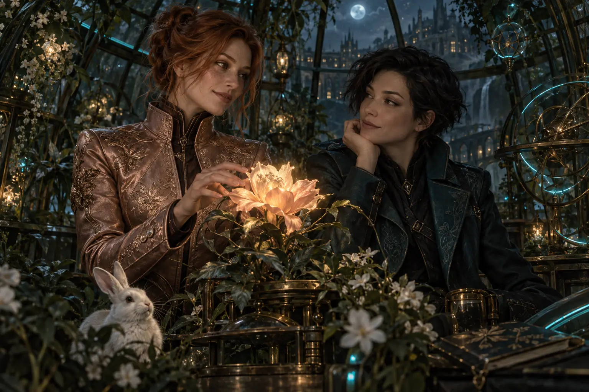

SAE DROP · EXACT WORDS, HELD LOCALLY
What wants to become real?
Talk crooked. Capture your exact words, hold a thread, then record what happened. This public shell does not run a connected AI agent.
Local capture:
COMMITMENT PULSE
What we’re carrying
One doorway that survives the chat
Unify Steven’s world, durable work, local execution, and proof—without asking him to ferry the system.
No local threads yet